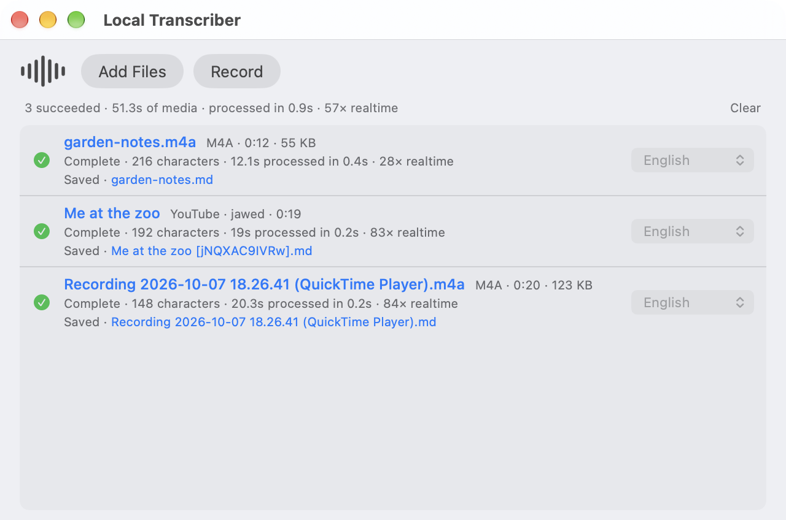
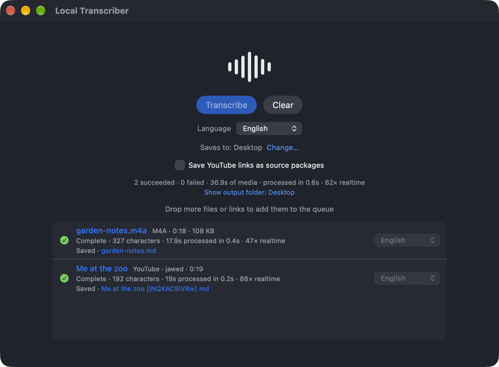

Media in. Markdown out.
Local Transcriber turns audio, video and YouTube links into timestamped Markdown transcripts. Speech recognition runs on your Mac, with Apple's on-device speech stack. No cloud transcription service, no account.
- Version 0.3.0
- macOS 26 or later
- Apple silicon
- Notarized DMG, 15 MB


# garden-notes
**Source:** `garden-notes.m4a`
**Duration:** 00:00:18
**Language:** en-US
**Engine:** Apple SpeechAnalyzer
**Transcriber:** SpeechTranscriber
## Transcript
### 00:00:00
Garden notes for the 1st week of October, the tomatoes are finished for the year, so the plants come out this weekend. …One queue, one folder, one file per source.
Drop things in and let it run. Each finished transcript is written straight to a folder you chose once.
-
Add media
Drag files or YouTube links onto the window, or copy and press ⌘V.
MP4 MOV M4A MP3 WAV, youtube.com, youtu.be
-
Queue
Jobs run one at a time, each with its own language. A failed job never stops the others, and Retry puts it back in line.
-
Transcribe on your Mac
Apple's speech stack does the recognition locally. For video, the audio is extracted first.
-
Save
Timestamped Markdown lands in your output folder. Existing files are never overwritten.
The transcript is the artifact.
One Markdown file per source, ordered by audio time and grouped by minute. The app does not summarize, index, rewrite or "clean up" what was said.
YouTube links can instead be saved as a source package: the audio,
a small source.json and the transcript, together in one
folder named after the video ID.
audio.m4athe downloaded audiosource.jsonwhere it came fromtranscript.mdthe transcript, with the video's URL, channel and date
{
"acquiredAt" : "2026-10-01T00:13:47Z",
"audioFilename" : "audio.m4a",
"channel" : "jawed",
"durationSeconds" : 19,
"publishedDate" : "2005-04-24",
"schemaVersion" : 1,
"sourceType" : "youtube",
"sourceURL" : "https://www.youtube.com/watch?v=jNQXAC9IVRw",
"title" : "Me at the zoo",
"transcriptionLocale" : "en-US",
"videoID" : "jNQXAC9IVRw"
}Transcription stays on your Mac.
The app is not fully offline when you give it links: a YouTube link cannot be transcribed without downloading its audio first. That download is temporary and deleted when the job ends.
On your Mac
- Transcription, of files and YouTube audio alike
- Audio extraction from video
- Reading and writing transcripts
Network
- Downloading a YouTube link's audio from YouTube
- Apple language assets, the first time a language is used via macOS
Download Local Transcriber.
Open the DMG, drag Local Transcriber to Applications and open it from there.
- File
LocalTranscriber-0.3.0.dmg15 MB- Signing
- The DMG and the app are signed with Developer ID and notarized by Apple.
- Hardware
- Apple silicon only. No Intel or universal build.
- SHA-256
43607ae707deee0adc10b5b9b9c10f08135cb4c2ac96b760a4d8beb5a743e0c6- From source
- Build it yourself with Xcode. See Build and run.
An early release, with known limits.
The queue, languages, output and source packages work and were checked in the real app. Some edges are known.
- YouTube is the only link source: no other sites, playlists or channels.
- Downloads use a pinned yt-dlp that never updates itself, so a change on YouTube's side can break them.
- A single download is limited to 30 minutes.
- There are no automated tests; behavior is checked by running the app.